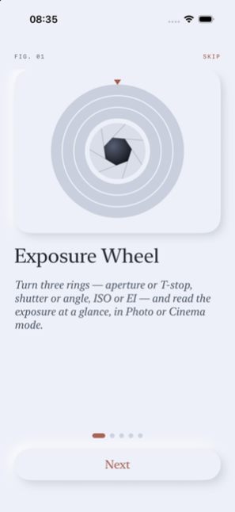
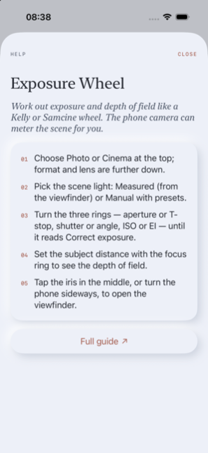
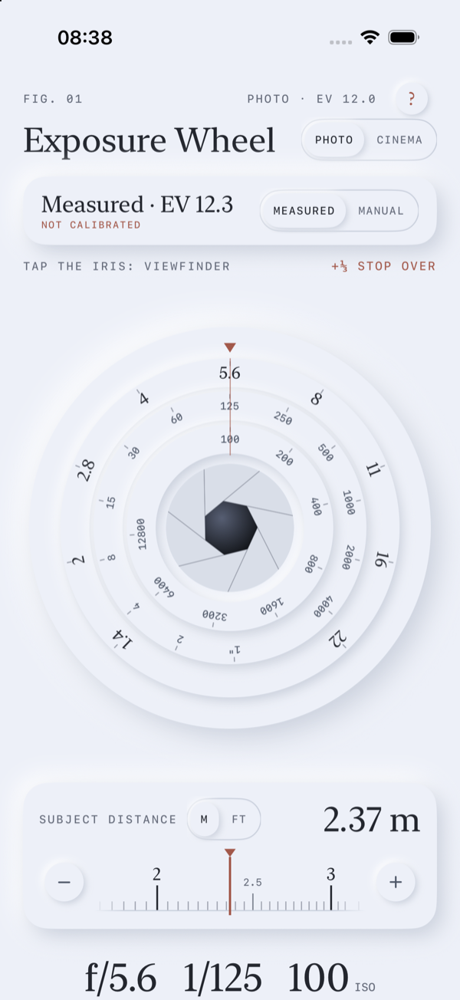
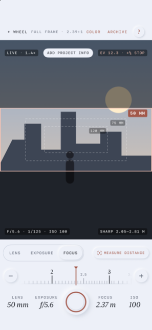
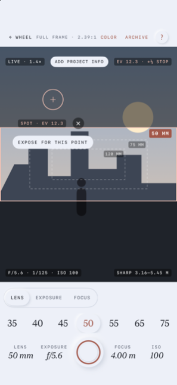
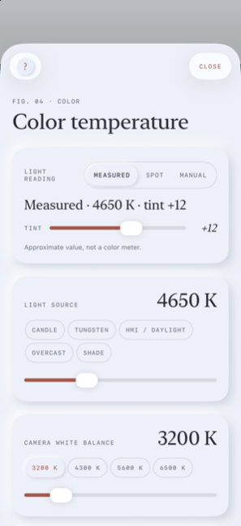
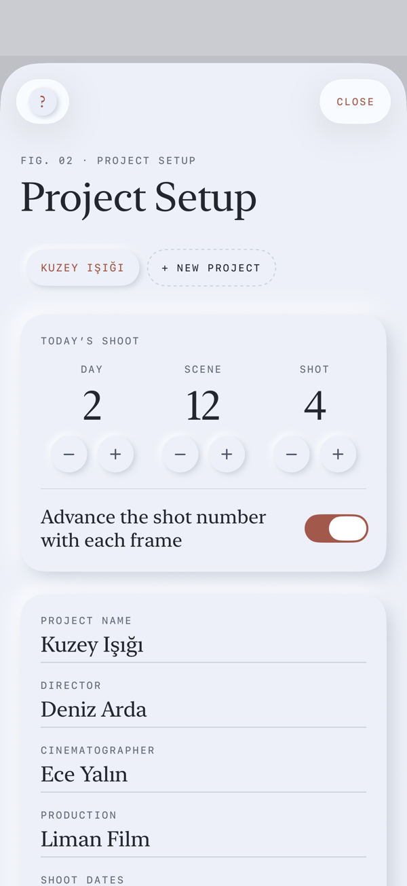
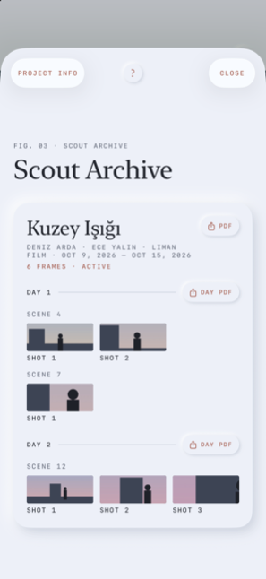
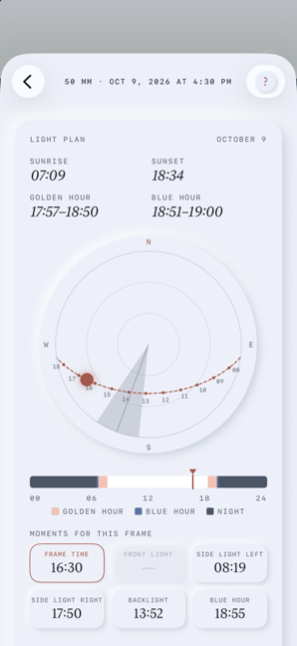

User Guide
CineBrain Pro 1.0 · PDF version
1 · Getting started
CineBrain Pro is an exposure and depth-of-field wheel for photography and cinema, a director’s viewfinder that shows your lens’s frame through the iPhone camera, a light meter, a gel and filter calculator, and a scout archive with a light plan for every frame you save.
First launch
A five-screen introduction (FIG. 01–05) shows the main ideas. Tap Skip to leave it at any time. You can watch it again in Project Setup › Introduction.
Help on every screen
The small ? at the top right of each main screen opens a short explanation with three to five steps and a Full guide link to the matching part of this page.
Permissions
- Camera — the viewfinder, metering and saving frames.
- Location, while using the app — the sun’s position and light times. Optional.
- Photos, add only — saving frames to your photo library.
- Microphone and Speech Recognition — asked the first time you hold a note’s microphone; only for voice notes, recognized on your iPhone. Optional.
LiDAR, compass and motion sensors need no permission. Nothing leaves your iPhone; see the privacy policy.
Language and units
The app follows your iPhone’s language (English or Turkish); you can choose a different one for this app alone in Settings › CineBrain Pro › Language. Distances use meters or feet according to your region; switch in the subject distance card or in Project Setup.


2 · Exposure Wheel

Photo or Cinema
The switch next to the title changes the wheel. The app opens in Cinema the first time and then in whichever mode you used last; each mode remembers its own format, frame rate, filters, shutter and ISO. Photo uses f-stops, shutter speeds (1 s to 1/4000) and ISO. Cinema uses T-stops, shutter angle (360° to 11.25°) with a frame rate, and EI. Switching resets shutter and sensitivity to sensible defaults (1/125 · ISO 100, or 180° · EI 800 with ND 0.9) and sets the aperture to match the scene.
Scene light
- Measured — read by the iPhone camera while the viewfinder is open. The wheel keeps the last reading when you close it.
- Manual — choose Sunny (EV 15), Overcast (12), Indoor (8) or Night (5).
- Spot appears after you use “Expose for this point” in the viewfinder.
The small not calibrated note opens the meter calibration (see Project Setup). Under the card, the wheel tells you how many stops over or under the current settings are, in thirds of a stop.
The rings
Drag the rings round: outer — aperture or T-stop (1.4 to 22); middle — shutter or angle; inner — ISO or EI (100 to 12800). Each step clicks lightly. Tap the iris in the middle, or turn the phone sideways, to open the viewfinder. The EV at the top right is the EV of the current settings, filters included.
Below the wheel
- The filters line (when filters are mounted) and the subject distance card — see Focus.
- Aperture, shutter and ISO in large type, then the depth of field card: near and far limits, hyperfocal distance, sensor size, crop factor, circle of confusion and the lens’s approximate horizontal angle of view at the current focus distance.
- The color temperature card opens Color.
- Format — Photo: Micro 4/3, APS-C, Full frame, Medium format. Cinema: Super 16, Super 35, Large format, 65 mm. Frame rate (Cinema): 24 to 120.
- Filters — add with + Add filter: ND 0.3–2.1, polarizer (≈1⅔ stops), 85 and 85B (⅔), 80A (2), 81A (⅓), diffusion ⅛–1 (no light loss) or a custom loss in stops. Tap a filter to remove it. The total loss counts in the exposure.
- Lens — 8 to 600 mm.
- Set aperture for the scene picks the aperture or T-stop closest to correct exposure.
3 · Focus and depth of field
The focus ring
The subject distance card works like a lens focus scale: drag the ruler left or right under the copper index. The scale is logarithmic — close distances are spread out, far ones bunched up. Drag slowly for fine steps, fast to move quickly. Each step gives a light tap; whole meters or feet give a firmer click. Dragging the ruler never scrolls the page.
- Steps (meters)
- 1 cm up to 2 m · 5 cm from 2 to 5 m · 10 cm from 5 to 10 m · 50 cm from 10 to 30 m · then ∞.
- Steps (feet)
- 1″ up to 6′6″ · 2″ up to 16′6″ · 4″ up to 33′ · 1′6″ up to 100′ · then ∞.
The − / + buttons move one step of the current range; hold them to repeat, faster the longer you hold. Tap the large value to type an exact distance (for example 2.37 m, or feet and inches), or choose ∞. The m / ft switch changes the unit.
In the viewfinder
The same distance appears in the viewfinder’s Focus tab, and the iPhone camera focuses at about that distance. On iPhones with LiDAR, Measure distance measures the point in the center of the frame (up to about 5 m) and writes it in. iPhones with two rear cameras show Estimate distance instead, worked out from the depth data of the two cameras. On iPhones with one rear camera there is no button; set the distance by hand. In short: LiDAR on LiDAR models; an approximate estimate from depth on dual-camera models; manual entry on other models. Estimates are marked ≈ here, in the viewfinder and in the frame’s details. In every case the Distance measuring offset in Project Setup is added for the distance between phone and sensor plane.
Depth of field
Depth of field uses the circle of confusion of the chosen format and is shown to the centimeter below 10 m (for example 2.31–2.48 m), or in feet and inches.
Depth-of-field marks on the ring
Like the depth-of-field scale on a lens barrel, the focus ring shows two short copper lines on either side of the index: the near and far limits of sharpness for the current lens, aperture or T-stop, format and distance. The space between them is lightly filled, and the limits are written beside the lines in small mono type (to the centimeter below 10 m, or in feet and inches). When the far limit reaches infinity — you are focused at or beyond the hyperfocal distance — the band runs with an arrow to the ∞ end instead of a far line. If a limit is off the visible part of the ring, its value waits at the edge with an arrow. The marks follow the logarithmic scale and update as soon as you change the lens, aperture, format or distance; in the viewfinder they use the aperture chosen in the Exposure tab.

4 · Viewfinder

What you see
The iPhone camera zooms so that the active lens’s frame (copper, in the chosen aspect ratio) and its protect lines fill the picture — almost edge to edge in landscape, full width in portrait. The iPhone switches between its ultra-wide, wide and telephoto cameras by itself. Outside the frame is darkened; neighboring lenses are drawn as dashed frames with their focal lengths. If your lens is wider than the phone can show, ◂ Wider ▸ appears.
Top of the screen
- ← Wheel, the format label, Color, Archive and ?. The format label shows the sensor format, the ratio, the anamorphic squeeze and how many protect ratios are on (e.g. Super 35 · 2.39 · 2× · +2). It sits in a capsule with a copper outline and a small arrow; tap it to change them.
- Live · 1.4× — the phone’s zoom (1× = main camera).
- The copper scene · shot button (Project Setup when there is no project) — opens Project Setup.
- EV · stops — the scene light and how far the settings are from correct exposure.
Tabs
- Lens — choose the focal length. If yours isn’t in the list, Custom… at the end takes any value from 1 to 1200 mm, decimals too (52.3 or 52,3); it is remembered with the mode’s settings.
- Exposure — choose an aperture or T-stop to preview: the picture brightens or darkens to show the over- or underexposure. The frame you save records this value.
- Focus — the focus ring and Measure distance (LiDAR) or Estimate distance (dual-camera iPhones; none on single-camera iPhones, see Focus).
Format, aspect ratio and anamorphic
The first time you open the viewfinder in a mode, it asks Which format does your camera record in? and lists that mode’s formats with their sensor sizes (e.g. Super 35 · 24.89 × 18.66 mm). Tap yours. Photo and Cinema are asked separately, since each mode keeps its own format. Once you have picked a format here, on the wheel or in Project Setup, the question doesn’t come back; if you swipe it away without choosing, it asks again next time.
Tap the format label (in landscape, the ratio on the rail) to open Format & Ratio:
- Format — the sensor format of the current mode (Photo or Cinema). In the lens list, pick the focal length engraved on your lens: everywhere in the app (viewfinder, wheel, archive, PDF) the lens is its real focal length, never a 35 mm equivalent; the angle of view is worked out from it and the format. Focusing closer narrows the frame a little: the viewfinder frame, the saved frame and the angle follow the focus distance (a thin-lens estimate — with a 50 mm about 3% narrower at 3 m, 10% at 1 m, 21% at 0.5 m). Real lenses “breathe” differently, so treat it as approximate.
- Aspect ratio — 1.33 (4:3), 1.66, 1.78 (16:9), 1.85, 2.00, 2.20, 2.39, 1:1, and 4:5 and 9:16 for vertical social video, or Custom (0.50–3.00 in steps of 0.01). The frame is the largest area of that ratio that fits the sensor: a ratio wider than the sensor is cut from the top and bottom, a narrower one from the sides. The horizontal angle of view and the frame lines follow from it.
- Anamorphic squeeze — Spherical, 1.3×, 1.5×, 1.8× or 2×. With an anamorphic lens the horizontal angle widens by the squeeze; the frame and angle of view are worked out on the desqueezed picture, and the chosen ratio is the ratio of the desqueezed picture.
- Protect — up to two extra ratios for shoot & protect (e.g. 16:9 for TV and 9:16 for social). Each is the largest area of that ratio on the sensor, drawn as a thin dashed line with a small label in its top-left corner.
The ratio, squeeze and protect lines you pick here last only for this session: Project Setup keeps its own value (shown at the top of the panel). Back to Project Setup drops the change; Save to Project Setup makes it the new setting. The format is the same setting as on the wheel and in Project Setup.
Spot metering
Tap anywhere in the picture to meter that point; a ring and its EV appear. Expose for this point makes it the scene light (source Spot) and sets the wheel’s aperture to match. ✕ returns to average metering.
Sun marker
With location and compass, a copper disc shows where the sun is in the picture, or an arrow at the edge points to it (kept clear of the info lines at the top and bottom). Backlight appears when the sun is inside the frame. If the marker is off, center the real sun horizontally and tap Align next to it; fine-tune in Project Setup › Compass correction.
Saving a frame
Press the round copper shutter. The screen flashes and “Saved · Scene 12 · Shot 3” appears. The frame is cropped to the active lens’s frame in the chosen ratio and saved in the archive with the lens, format, aspect ratio, anamorphic squeeze, protect ratios, exposure, filters, focus distance, depth of field, date, project, day, scene and shot, and — when available — location and compass heading. It is also added to Photos, with an info strip below it if you turned that on. With “Advance the shot number with each frame”, the shot number goes up by one. The Note button beside the shutter (on the right-hand rail when the phone is sideways) is always there: it opens the note of the last saved frame, to write or dictate (see Voice notes).
The small switch under the shutter (on the rail in landscape) chooses the exposure of the saved frame: Shoot exp. (default) keeps the simulated exposure you see in the viewfinder, so an underexposed setting is saved dark; Normal exp. lets the phone expose correctly for a moment before saving — good for recording the framing and the location. The frame’s details show which one was used (Saved exposure).
Protect ratios are drawn on the saved frame as thin dashed lines with a small label — in the frame details, the PDF and the copy in Photos. A protect area larger than the frame shows only the lines that fall inside it (e.g. the sides of 9:16 on a 2.39 frame). Turn this off in Project Setup › Export.
Turn the phone sideways for the landscape layout: the controls move to a rail on the right, and the Focus tab shows a vertical focus ring (∞ at the top) with the same depth-of-field marks and − / + buttons.
5 · Color

Open Color from the color temperature card on the wheel or from the viewfinder.
Light reading
- Measured — the iPhone camera’s automatic white balance, read live while the viewfinder runs.
- Spot — the viewfinder opens with “Tap a white or grey surface”; the color of that spot is measured and sent back here.
- Manual — Candle 1900 K, Tungsten 3200 K, HMI / Daylight 5600 K, Overcast 6500 K, Shade 7500 K, or the slider (1500–12000 K). Changing a value by hand switches the source to Manual.
The tint slider (−50 to +50) can be adjusted by hand. The reading is approximate — the phone is not a color meter.
Camera and mired shift
Set the camera’s white balance (3200, 4300, 5600, 6500 K or the slider). The mired shift is camera minus light: plus means the light is too blue (warm it with CTO), minus means it is too warm (cool it with CTB).
Suggestions
- Gels on the light — Rosco or LEE, one gel or a pair, with product numbers, the shift, what remains and the resulting color temperature.
- Or a filter on the lens — 85, 85B, 85C, 81A–C, 80A–C, 82A with their filter factors. Mount on the lens adds 85, 85B, 80A or 81A to the wheel’s filters.
- Green · magenta — from the tint: Plus or Minus Green, full, ½ or ¼ (Rosco 3304/3315/3316 and 3308/3313/3314; LEE 244–246 and 247–249). Tint is roughly in CC units.
Rosco values are as published. LEE publishes conversions; its mired shifts here are calculated from them. Camera filters use Wratten values.
6 · Scouting: frames, project info, archive, PDF


Project Setup
Open it from Project Setup at the top of the Exposure Wheel, the copper scene · shot button in the viewfinder, or Archive › Project Setup. Everything set here stays as it is until you change it here — switching modes or trying something in the viewfinder doesn’t reset it.
- Projects — tap a project to make it active; + New project creates one. New frames go to the active project.
- Today’s shoot — day, scene and shot counters with − / +; Advance the shot number with each frame.
- Credits — project name, director, cinematographer, production and shoot dates; they appear in the archive and on the PDF cover.
- Delete project — its frames stay in the archive.
Settings (in Project Setup)
- Format — the sensor format for Photo and for Cinema; each mode keeps its own.
- Frame — aspect ratio, anamorphic squeeze and protect lines for the viewfinder and saved frames. With an active project it is also saved with the project and comes back when you pick that project again.
- Distance unit (m or ft) and Distance measuring offset (±100 cm; plus if the camera’s sensor is behind the phone). It applies to LiDAR readings and to depth estimates.
- Meter calibration — ±3 stops in thirds. Meter the same scene with a light meter and the viewfinder and enter the difference.
- Compass correction — ±45°.
- Export — add an info strip (project, scene/shot, format, aspect ratio, anamorphic and protect ratios, lens, exposure, depth of field) under frames saved to Photos, ending with CINEBRAIN PRO; Draw protect lines on saved frames (on by default); and Frames per page for scout reports (1 or 2).
- Introduction — watch the tour again, or open this guide.
Scout Archive
Open it with Archive in the viewfinder. Frames are grouped by project (the active one first), then by day and scene, with the shot number under each thumbnail. Tap a frame for its details; touch and hold to delete it.
Frame details
The saved frame, each detail in its own box (format and aspect ratio separately), the Light Plan and a note field that saves itself.
Voice notes
Next to Note there is a microphone. Touch and hold it, speak, and release: what you said is added to the end of the note. The same note card opens from the Note button beside the viewfinder’s shutter, for the last saved frame. Notes are recognized in the app’s language (English or Turkish), on your iPhone only: the sound is not recorded and nothing is sent anywhere. The first time, the app asks for Microphone and Speech Recognition access; hold the button again once you have allowed it. If your iPhone cannot recognize the app’s language on the device, the microphone is not shown and you type the note.
PDF scout report
PDF makes a report for the whole project, Day PDF for one day. Then pick Frames per page and tap Make PDF; the share sheet sends it where you like. The cover carries the credits. Your choice is remembered for the next export and can also be set in Project Setup › Export.
- 1 · full page — a large picture with every detail, the best light times and a wide lined notes area (or the note).
- 2 · side by side — two frames, each with all its details, light times and notes area.
7 · Light Plan

Every frame saved with a location has a light plan for that day and place, calculated on the phone (NOAA solar formulas).
- Sunrise, sunset, golden hour (sun between −4° and 6°) and blue hour (−6° to −4°); evening times are shown.
- Sun dial — north up, overhead in the center, horizon at the edge. The dashed copper line is the sun’s path with hours; the grey wedge is the frame’s direction, as wide as the lens’s angle of view.
- Day line — night, blue hour, golden hour and day. Drag along it to pick a time.
- Moments for this frame — Frame time, Front light, Side light left and right, Backlight and Blue Hour: the best time of day for each, preferring a low sun. “—” means it does not happen that day. Tapping one moves the sun on the dial.
For the chosen time you see the sun’s direction and height, where it is relative to the frame, an estimated light level (a rough EV for a clear sky) and suggested settings: in Cinema the angle, frame rate and EI stay and the ND (then the T-stop) changes; in Photo the ISO and filters stay. For backlight it suggests opening about one stop for faces. Set the wheel to this time loads that light, lens, format and settings into the Exposure Wheel (the scene light becomes Manual).
Moments that depend on direction need the compass heading of the frame.
8 · Questions and limits
Does it need the internet?
No. Everything, including the sun calculations, runs on the iPhone.
Where are my frames?
In the app on your iPhone, and in Photos if saving there worked. They are part of your device backups. Deleting the app deletes its archive.
How accurate is the meter?
The reading comes from the iPhone camera’s own exposure and can differ slightly from a light meter. Compare once and enter the difference in Meter calibration.
How accurate is the color reading?
Approximate. Use a color meter for critical work. If green light (fluorescent) suggests Plus instead of Minus Green, please tell us.
LiDAR and estimated distance
LiDAR (Pro models) measures up to about 5 m. LiDAR on LiDAR models; an approximate estimate from depth on dual-camera models; manual entry on other models. Estimates are marked ≈:
- Depth — iPhones with two rear cameras compare the two pictures. Best on a detailed surface within a few meters; plain walls, glass and dark scenes are hard.
LiDAR and depth measuring pause the preview for a moment. If an estimate is off by the same amount every time, set the Distance measuring offset to correct it. The frame’s details show how its distance was found (Distance measured); a distance you set by hand is not marked.
Compass and sun marker
The iPhone compass is usually within 5–10° and can be disturbed by metal nearby; use Align or Compass correction. The sun marker needs location.
The viewfinder frame
Choose the ratio by tapping the format label; 2.39:1 is the default. Anamorphic lenses see wider by their squeeze, so they reach “Wider” sooner. Lenses wider than the phone’s ultra-wide camera show “Wider”; very long lenses use digital zoom.
Frames without a light plan
Frames saved without location (or before the app had location access) have no light plan; frames without a compass heading have no direction-based moments.
Frames in Photos
The app asks only to add photos and never reads your library. Saved frames are added to your library, not to an album; you can put them in an album yourself in Photos.